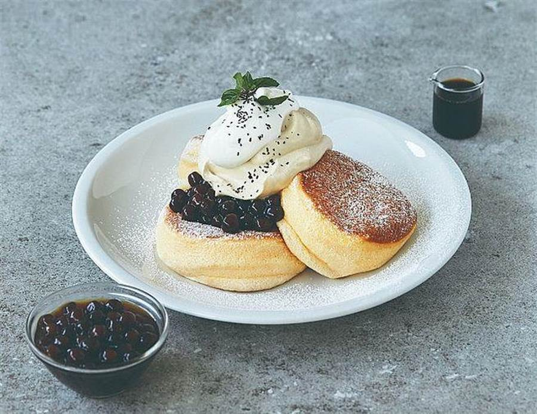
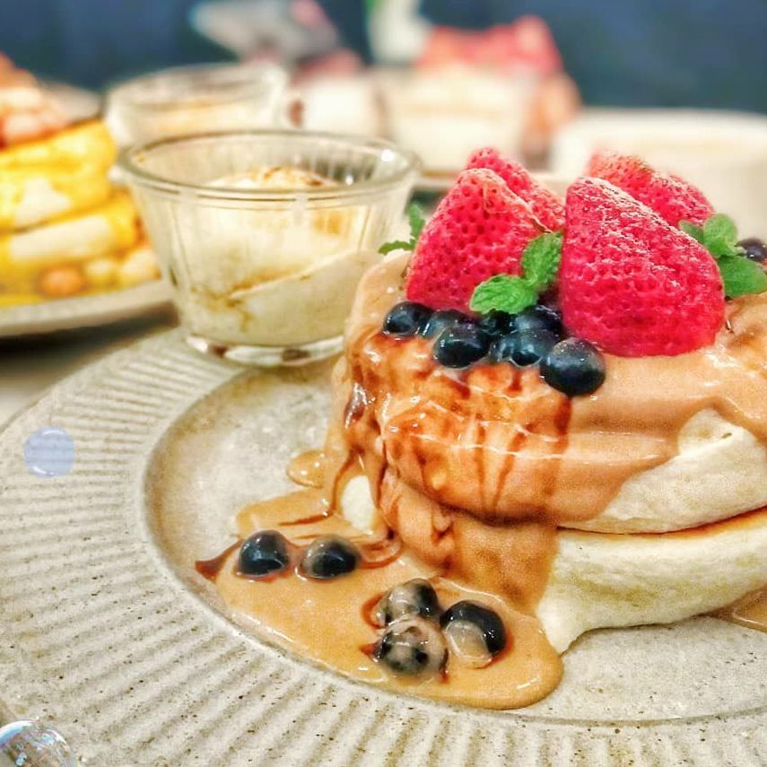
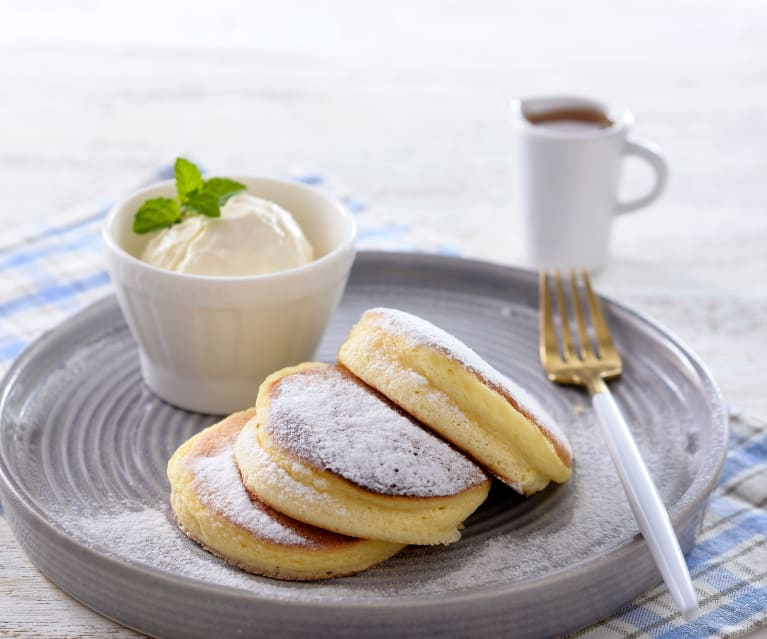

材料： 雞蛋2顆、牛奶20ml、砂糖40g、低筋麵粉25g、無鹽奶油 做法： 一、將過篩低筋麵粉與蛋黃、牛奶攪拌均勻備用。 二、接著打發蛋白，砂糖分次加入一起打發至硬性發泡。 三、分次先取一些蛋白霜加入麵糊混合，在倒入剩餘的蛋白霜刮刀使用切拌麵糊不易消泡。 四、鍋內抹上少許奶油，麵糊分次疊上，加入少許水蓋上鍋蓋以小火蒸煎，雙面煎約3分鐘，即可完成。   
雞蛋2顆、牛奶20ml、砂糖40g、低筋麵粉25g、無鹽奶油
做法：
一、將過篩低筋麵粉與蛋黃、牛奶攪拌均勻備用。
二、接著打發蛋白，砂糖分次加入一起打發至硬性發泡。
三、分次先取一些蛋白霜加入麵糊混合，在倒入剩餘的蛋白霜刮刀使用切拌麵糊不易消泡。
四、鍋內抹上少許奶油，麵糊分次疊上，加入少許水蓋上鍋蓋以小火蒸煎，雙面煎約3分鐘，即可完成。